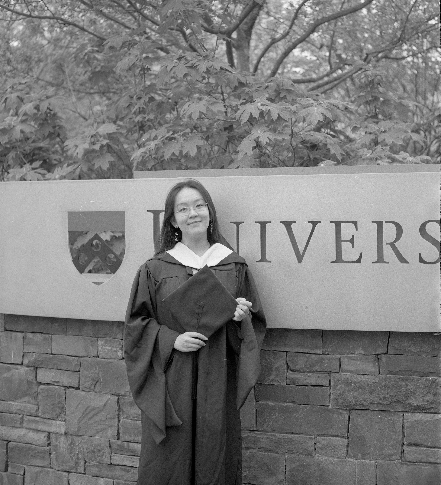
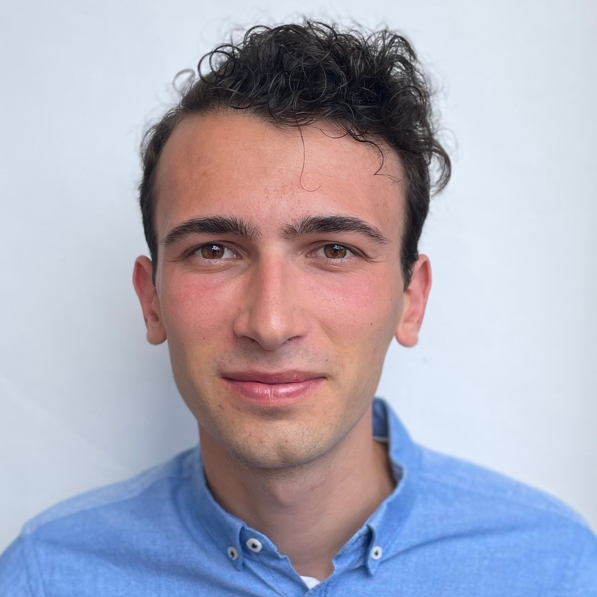
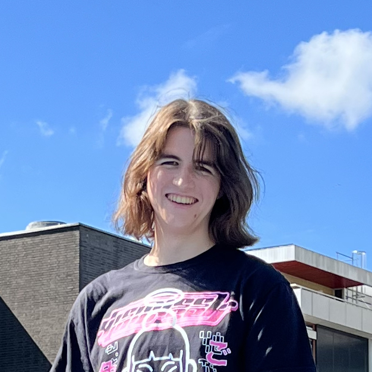
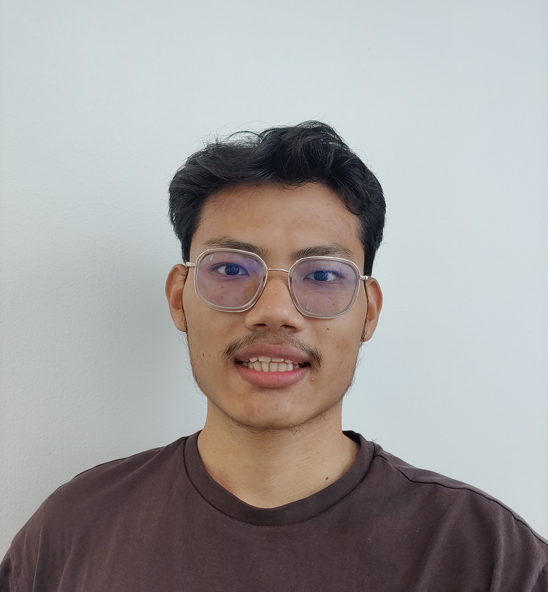

1st Student-Focused SciML Symposium @ GT 2023
Virtual Symposium
16th, 21st & 30th Nov, 2023
16th, 21st & 30th Nov, 2023
| Home | Registration | Program |
The inaugural student-focused scientific machine learning (SciML) symposium at Georgia Tech is dedicated to the development and applications of SciML methodologies led by current students in a wide array of applications such as weather forecast, public health predictions, SciML models for materials science, drug discovery, financial prediction, astrophysics, and robotics, to name a few. The primary goal of this symposium is to showcase student talents and contributions through the invited and contributed talks. Although this symposium is student-focused, everyone is welcome to attend irrespective of their student status. This event originated from the graduate Special Topics Course on SciML at Georgia Tech. In compliance with FERPA, only the group names (rather than the author names) will be provided in the schedule for the projects that were conducted by the students of the course.
Code of Conduct: The organizational staff of the SciML Symposium is committed to providing a positive symposium experience for all attendees, regardless of gender, gender identity and expression, sexual orientation, disability, physical appearance, body size, race, age, religion, or national and ethnic origin. We encourage respectful and considerate interactions between attendees and do not tolerate harassment of symposium participants in any form. Symposium participants violating these standards may be sanctioned or expelled from the symposium at the discretion of the symposium organizers.
| 16th Nov: Add Event to Calendar | Quick Link to join Zoom Session 1 |
| 21st Nov: Add Event to Calendar | Quick Link to join Zoom Session 2 |
| 30th Nov: Add Event to Calendar | Quick Link to join Zoom Session 3 |
| 8:00-8:05AM ET | Introductions |
| 8:05-8:20 AM ET | Enhancing Option Pricing with Neural ODEs and SDEs |
| 8:20-8:35 AM ET | Team Py-Iguana Title |
| 8:35-8:50 AM ET | Team Polaris Title |
| 8:50-9:15 AM ET | Invited Talk (Jack Richter-Powell - MIT) Staying grounded: scientific machine learning with physical inductive biases |
| 8:00-8:10AM ET | Introductions |
| 8:10-8:35 AM ET | Invited Talk (Handi Zhang - UPenn) Federated SciML for approximating functions and solving differential equations |
| 8:35-8:45 AM ET | Efficient DFT Title |
| 8:50-9:05 AM ET | Team Stardust Title |
| 9:05-9:15 AM ET | Auto CV Title |
| 8:00-8:10AM ET | Introductions |
| 8:10-8:35 AM ET | Invited Talk (Lorenzo Xavier Van Munoz - MIT) DeltaRCWA: a PEDS-driven solver for metamaterial scattering surrogates |
| 8:35-8:50AM ET | Cassiopeia Title |
| 8:50-9:05 AM ET | CliML Title |
|  | Handi Zhang (she/her) is a Research Assistant at the University of Pennsylvania. She earned her M.A. in Applied Mathematics and Computational Science from the university, and B.S. in Applied Mathematics and B.A. in Economics from the University of California, San Diego. Her broad research interests involve scientific machine learning (SciML) including theory, algorithms, and applications to real life problems. She has worked on the interdisciplinary methods across PINNs, operator learning and federated learning, where she applied data-driven methods constrained by physical knowledge to solve PDEs or learn differential operators. More recently, She's working on developing and applying scalable machine learning approaches, numerical methods and federated learning for analyzing high-dimensional data. |
|  | Lorenzo Van Muñoz (he/him) is a Dean of Science Fellow and NSF Graduate Research Fellow at the Department of Physics of the Massachusetts Institute of Technology. He is driven to work on novel methods for resolving and designing the physics of photonic and electronic systems. Under the supervision of Professor Steven G. Johnson, Lorenzo is working on computational methods for nanophotonic inverse design and on mode cleanup. His research interests also include efficient quadrature schemes for computing response functions of resonant systems. Lorenzo received a B.S. in Physics from the California Institute of Technology, where he was a Mellon Mays Undergraduate Fellow. |
|  | Jack Richter-Powell (they/them) is a PhD student at MIT. Prev. Visiting researcher at UofT/ Vector Institute / MILA. Their work sits at the intersection of applied math, computer science, and more recently computational physics. Their research involves developing principled and structured learning algorithms with strong inductive biases derived from differential geometry, PDE theory and more recently physics. Put simply: stop learning principles you already know – save the learning for the hard bits. |

|
Dr. Raphaël Pestourie is an Assistant Professor in Scientific Machine Learning at the School of Computational Science and Engineering, Georgia Tech. He was a Postdoctoral Associate at MIT before joining GaTech, and earned his PhD in Applied Mathematics from Harvard University.
He leads a research group with the goal to extend the horizon of accurate models for the optimization of engineering solutions. For example, introducing models where trial and error and heuristics are the state of the art for practitioners. His group develops fast approximate PDE models and scientific machine learning models that combine AI models and scientific models, end to end. These new models enable the ressource-efficient and large-scale optimization of engineering solutions in the following areas:
|
|  | Tenzin Bhotia is a Master's in Computer Science grad student at GaTech, and the Teaching Assistant of CSE-8803, Scientific Machine Learning course. He has 3 years of past industrial experience as an Applied Scientist and a Machine Learning Engineer. He also has research experience preliminary in the domain of NLP and Deep Learning. Tenzin currently foucesses on efficient large language models spanning from k-bit quantizations at unit scale, to systems level distributed optimizations at large-scale. |